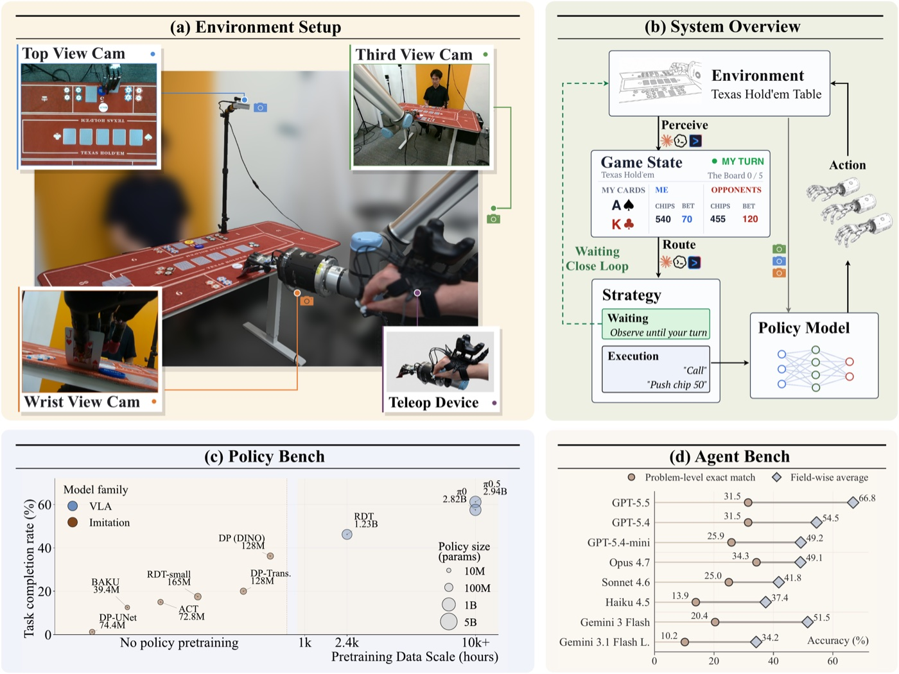
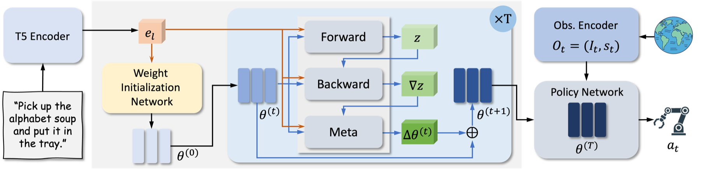
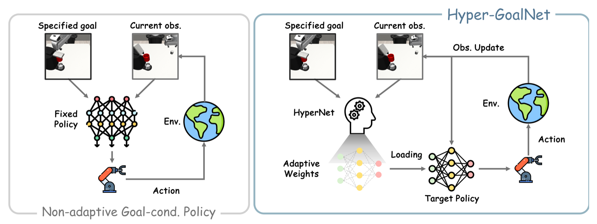
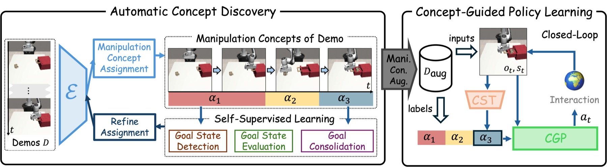
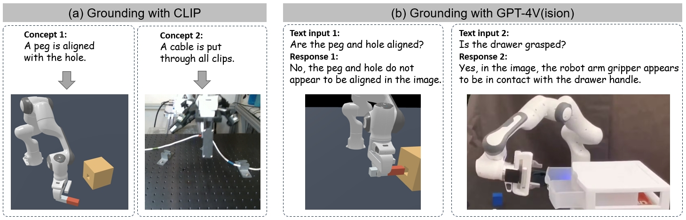

Agentic robot learning
Designing execution loops where robots plan, act, verify outcomes, diagnose failures, and improve through feedback-driven interaction.
Generalist embodied systems and agentic robot learning
Ph.D. Candidate, Institute of Data Science,
The University of Hong Kong
I study scalable generalist embodied systems, with a focus on conditional policy learning, parameter generation, and agentic execution for robust long-horizon tasks.
My research focuses on building scalable generalist embodied systems that can adapt across tasks, environments, and embodiments. I am especially interested in conditional policy learning, parameter generation, and agentic systems for robust long-horizon tasks.
More broadly, I am interested in how unified learning architectures can organize heterogeneous embodied experience across interaction, visual dynamics, and language-grounded feedback into scalable objectives for agents that perceive and act in the physical world.
Designing execution loops where robots plan, act, verify outcomes, diagnose failures, and improve through feedback-driven interaction.
Learning policies that adapt from goals, instructions, observations, and embodiment context while preserving a shared, reusable policy core.
Treating adaptation as the generation of task- or context-specific policy parameters, connecting hypernetworks, optimization, and embodied control.
Representative work on embodied agents, policy generation, concept discovery, and language-grounded manipulation.


RSS 2026
Decouples language-conditioned policy generation from vision-action control, reducing shortcuts where policies exploit visual-action correlations and ignore instructions.



2023-2027 expected
Ph.D. Candidate, Institute of Data Science
Supervisor: Prof. Yanchao Yang
2021-2023
Master of Science in Electrical and Computer Engineering
2017-2021
Bachelor of Engineering in Electrical Engineering
Contact